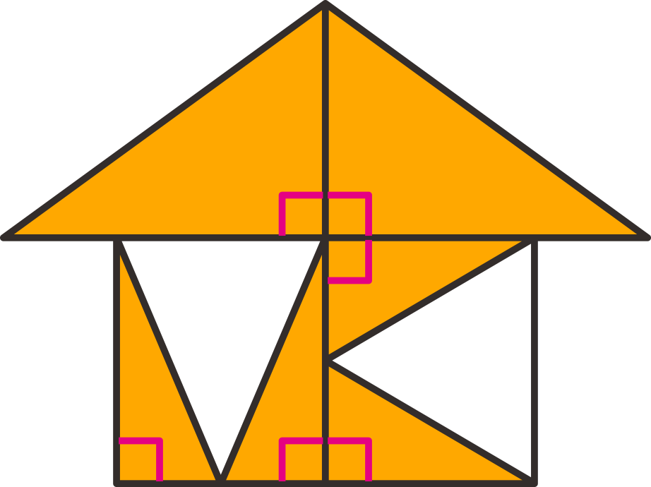

배운 내용을 기억하고 있나요
23쪽
1
2
3
4
1
세 점을 이용하여 주어진 각을 그려 보세요.
꾸러미 1
각 ㄱㄴㄷ
각 ㄴㄷㄱ
각 ㄷㄱㄴ
2
직각을 모두 찾아
표시를 해 보세요.
3
직각삼각형을 모두 찾아 색칠해 보세요.
4
직사각형을 모두 찾아
표 하세요.
직사각형은 네 각이 모두 직각인 사각형입니다.
한 각이 직각인 삼각형을 찾아 색칠합니다.

종이를 반듯하게 두 번 접었을 때 생기는 각과 같은 각을 찾으면 됩니다.
각 ㄱㄴㄷ은 각의 꼭짓점이 점 ㄴ이 되도록 그립니다.
각 ㄴㄷㄱ은 각의 꼭짓점이 점 ㄷ이 되도록 그립니다.
각 ㄷㄱㄴ은 각의 꼭짓점이 점 ㄱ이 되도록 그립니다.